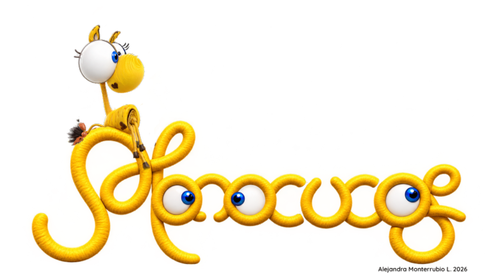
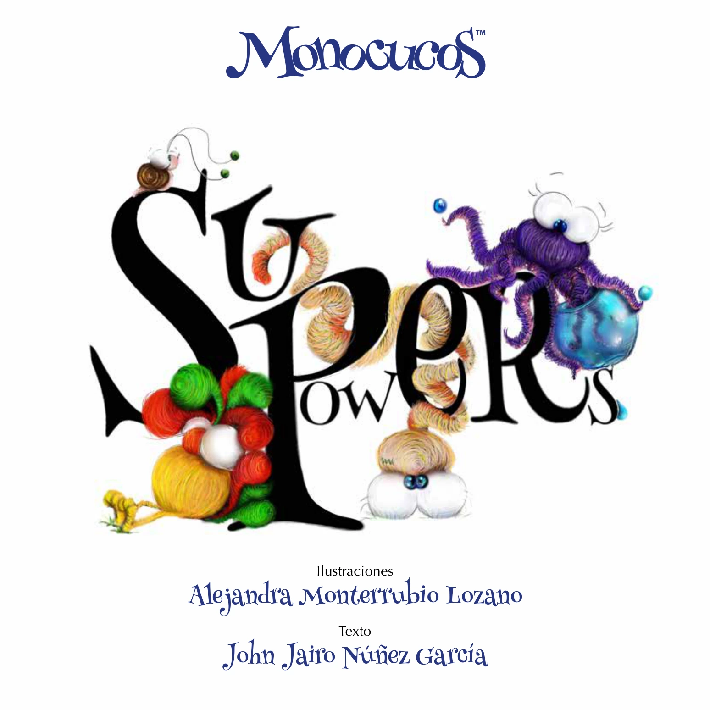
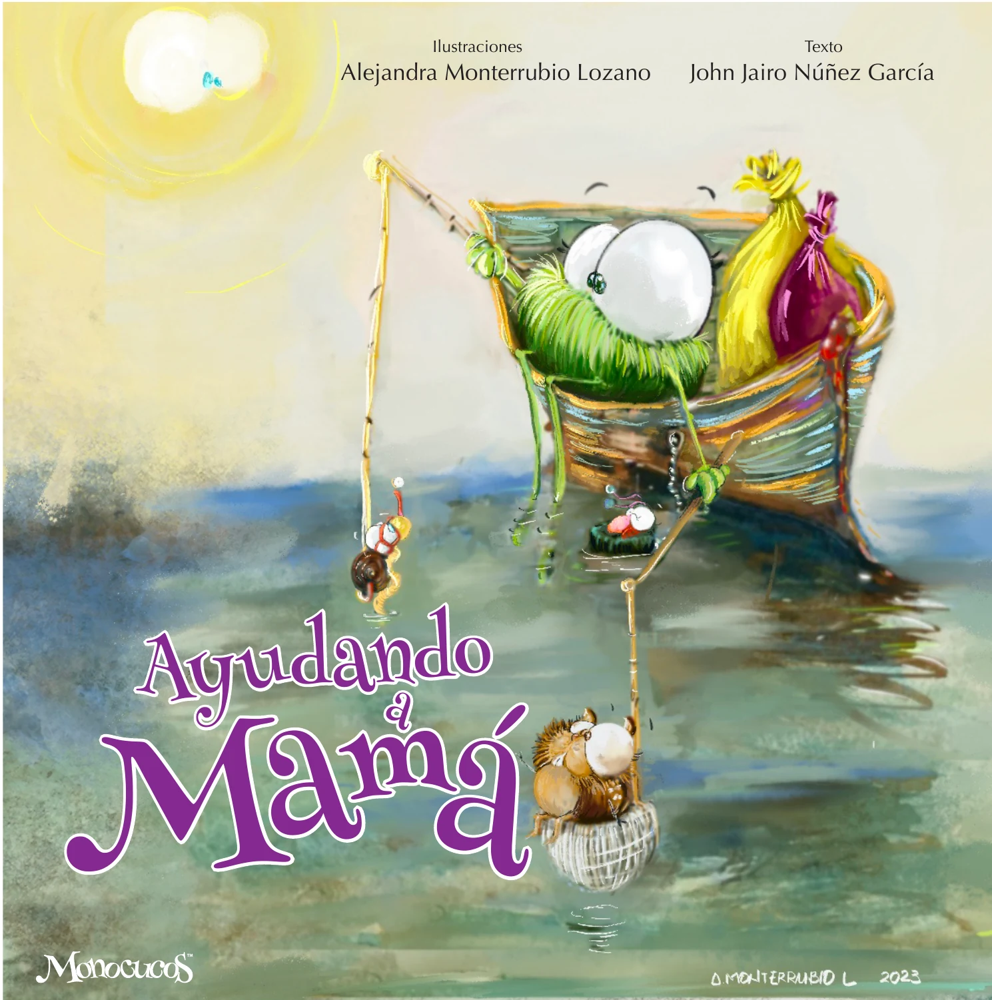

WŁĄCZANIE · SAMOAKCEPTACJA · POCZUCIE PRZYNALEŻNOŚCI
We All Fit In
Akceptowanie różnorodności i wspieranie tych, którzy mogą czuć się wykluczeni.
WłączanieSamoakceptacjaPoczucie przynależności

ŚWIAT MONOCUCOS
Każda opowieść rozpoczyna rozmowę. Opowieści, które zachęcają do odkrywania, odczuwania, zadawania pytań i uczenia się.
OPOWIEŚCI
Bohaterowie i ich historie mogą pomagać w rozmowach, zabawie, rozwijaniu wyobraźni oraz poznawaniu emocji i wartości.
Akceptowanie różnorodności i wspieranie tych, którzy mogą czuć się wykluczeni.

Odkrywanie własnych talentów i zrozumienie, że nasze działania mogą zmieniać otaczający nas świat.

Zabawna i wzruszająca opowieść z perspektywy dziecka o mamie, która z miłością i wytrwałością mierzy się z życiowymi wyzwaniami.

Opowieść, która pomaga dzieciom rozpoznawać emocje i uczy, jak sobie z nimi radzić.

Opowieść o wyzwaniach związanych z odnajdywaniem się w nowym otoczeniu i poznawaniem różnic kulturowych.

Opowieść o miłości między dziadkami a wnukami oraz o tym, jak ważne jest poczucie, że jest się kochanym.
Radość z posiadania kogoś, kto nas prowadzi, wspiera i otacza opieką.

Opowieść o tym, jak różnice między nami mogą nas do siebie zbliżać.
Opowieść o początkach MONOCUCOS i o tym, jak wspólnota pomaga dorastać kolejnemu pokoleniu.
WIĘCEJ NIŻ KSIĄŻKA
Bohaterowie i ich historie mogą pomagać w rozmowach, zabawie, rozwijaniu wyobraźni oraz poznawaniu emocji i wartości.
Opowieść może otworzyć drzwi. Rozmowa może otworzyć cały świat.
ODKRYJ DOŚWIADCZENIA MONOCUCOSMONOCUCOS
Odkryj świat bohaterów, opowieści i niezwykłych doświadczeń.
ODKRYWAJ OPOWIEŚCI